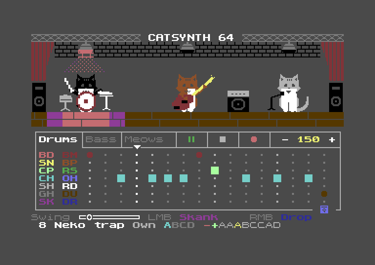
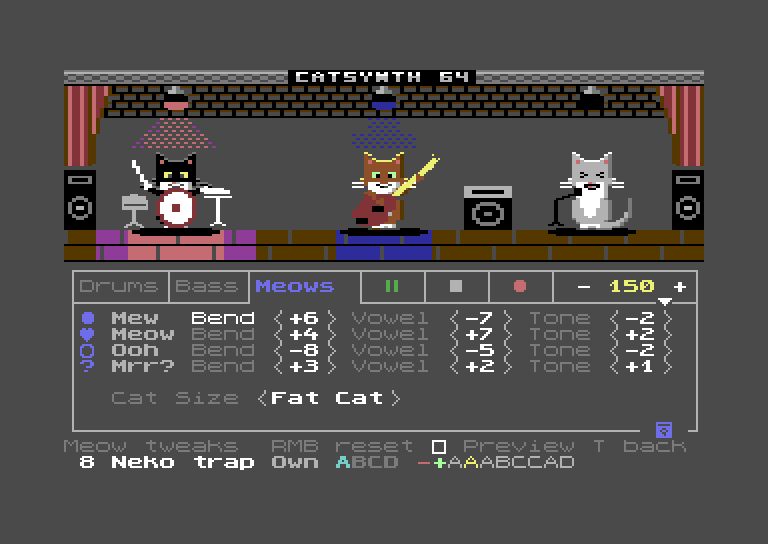

What is it?
Three cats play in a band on your Commodore 64. Choose one of ten styles and they start playing. Then make the song yours: click a step to add a drum, a bass note or a meow. Every meow lands on a note of the song's scale, so the singer is never out of tune. Chain bars into a song, play the pads live, record into the loop and save your songs to disk.
You do not need to know anything about music. If you do, you will find modes, scales, transposes, swing, dub echoes and a looper waiting for you.






What it can do
| 3 cats | drums (14 sounds, two a row: the left and right mouse buttons), bass and meows |
| 10 styles | dancehall, roots, steppers, ska, bossa, disco, funk, Neko Trap, acid and a blues shuffle, each with its own kit, bass, scale and a four-bar song |
| 10 slots | ten songs in memory on the keys 1 to 0, switched on the bar line; SHIFT+1-0 plays a song with another style's sounds |
| Mouse | a 1351 mouse in port 1 (a USB mouse on the C64 Ultimate); a joystick in port 2 moves the pointer too |
| Songs | four bars A to D and a chain of up to 16 bars |
| Settings | Bend, Vowel and Tone for each meow, Cat Size, a sidechain, the kit's tune, the bass's level and wave, Meowize, an acid squelch and a dub filter |
| Live | the keyboard as pads, and a looper |
| Second SID | dub echoes, a harmony singer and a bass delay |
| Disk | a directory, names, load, save, delete, and ten techno songs to start from |
Your first song
The tutorial makes your first song in ten minutes; the manual tells you everything else.
The browser version runs CatSynth 64 in an emulator. Best with a keyboard and a mouse: click the screen and move the mouse, and the cat paw pointer follows. SPACE plays and stops, 1 to 0 choose a song.
Get it
It runs on a real Commodore 64 (PAL), on a C64 Ultimate or an Ultimate 64, and in the VICE emulator.
| catsynth64-1.0.d64 | the disk: the program and ten techno songs |
| catsynth64-1.0.prg | the program file alone |
| catsynth64-1.0.zip | both, with the manual and the readme as text |
On the disk, type:
The source code (6502 assembler, 64tass) is on GitHub.